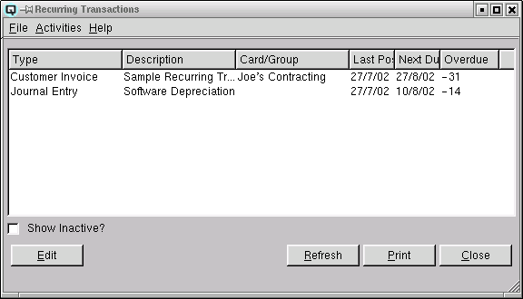

Recurring List

The recurring list provides a list of all transactions that will
recur. You can set a transaction to recur daily, weekly, bi-weekly,
semi-monthly, monthly, quarterly, semi-annually, annually or on demand.
List Table
-
- Type - The recurring type is displayed.
-
- Customer Invoice - Designates that the recurring
transaction is a customer invoice.
- Journal Entry - Designates that the recurring entry is a
basic journal entry.
- Cheque - Designates that the recurring entry is a cheque
- Vendor Invoice - Designates that the recurring entry is a
vendor invoice
- Vendor Payment - Designates that the recurring entry is a
vendor payment
- Description - The description of the recurring transaction.
- Card/Group - The name of the card or group affected if
indeed a card or group is affected by this recurring transaction.
- Last Posted - The last date that the recurring transaction
was posted.
- Next Due - The next date that the recurring transaction is
due to be posted.
- Overdue - The number of days the the recurring transaction
is overdue by. A positive number denotes days overdue. A negative
number denotes days until the next posting date.
- Inactive - The active state of the term.
Show Inactive
Toggle on or off. Toggle on to display both active and non-active
terms. Toggle off to display only active recurring transactions.
Edit
Select this function to edit the high-lighted recurring transactions.
Refresh
Clicking on refresh will refresh the data on the screen.
Print
Select this function to print the contents of the list to the
printer.